This page brings together basic information about the Malayalam script and its use for the Malayalam language. It aims to provide a brief, descriptive summary of the modern, printed orthography and typographic features, and to advise how to write Malayalam using Unicode.
വകുപ്പ് 2. ജാതി, മതം, നിറം, ഭാഷ, സ്ത്രീപുരുഷഭേദം, രാഷ്ട്രീയാഭിപ്രായം സ്വത്ത്, കുലം എന്നിവയെ കണക്കാക്കാതെ ഈ പ്രഖ്യാപനത്തില് പറയുന്ന അവകാശങ്ങള്ക്കും സ്വാതന്ത്ര്യത്തിനും സര്വ്വജനങ്ങളും അര്ഹരാണ്. രാഷ്ട്രീയ സ്ഥിതിയെ അടിസ്ഥാനമാക്കി (സ്വതന്ത്രമോ, പരിമിത ഭരണാധികാരത്തോടു കൂടിയതോ ഏതായാലും വേണ്ടതില്ല) ഈ പ്രഖ്യാപനത്തിലെ അവകാശങ്ങളെ സംബന്ധിച്ചേടത്തോളം യാതൊരു വ്യത്യാസവും യാതൊരാളോടും കാണിക്കാന് പാടുള്ളതല്ല.
Malayalam script is used to write the Malayalam language of Kerala state, and spoken by 35 million people including the diaspora, and the script is used for another 10 minority languages, according to the Ethnologue. It is also widely used for writing Sanskrit texts in Kerala.
മലയാളലിപിmlyāɭlipimələjɑːɭə lɪpɪMalayalam script
Originally descended from Bhrami, the Malayalam script is a Vatteluttu alphabet extended with symbols from the Grantha alphabet to represent Indo-Aryan loanwords. Throughout its history, it has absorbed words from Tamil, Sanskrit, Arabic, and English.
In the 1970s and 1980s, Malayalam underwent orthographic reform due to printing difficulties. A significant change involved the introduction of a visible virama (chandrakkala) rather than conjunct forms, and simplification of a number of forms, including consonant plus -u/-uu combinations.
The script is an abugida. Consonants carry an inherent vowel which can be modified by appending vowel signs to the consonant. See the table to the right for a brief overview of features for the modern Malayalam orthography.
The Malayalam script was significantly simplified at the beginning of the 1970s. Prior to the orthographic reform there were many more ligated forms. In particular, the vowels u/ū and r in 2nd position in a consonant were reduced from ligated forms to simple, unchanging glyphs alongside a consonant.
Generally, words are separated by spaces, however the number of characters between spaces can be quite high as sometimes spaces are used to indicate phonological pauses, rather than lexical boundaries.
Consonant clusters are typically indicated in modern Malayalam using the visible chandrakkala mark (virama), which indicates that no vowel follows a consonant. Conjunct forms are also expressed using stacked consonants, and conjoined consonants, where the chandrakkala is still used but hidden, and special chillu shapes.
As part of a cluster, RA has special forms. As a medial consonant in the modern orthography it appears as a simple glyph to the left of the letters spoken before it. When initial in the cluster its glyph includes a cillu hook at the top right. There are also special rules involving clusters of multiple RA letters.
Syllable-final consonant sounds may be represented by 2 dedicated combining marks (anusvara & visarga), but are generally ordinary consonants with chandrakkala, or 6 chillu forms. The word-final virama sometimes represents a half-u sound, rather than completely killing the inherent vowel. Because of this, Malayalam uses a set of syllable-final consonants called chillus that have no vowel sound associated with them.
The Malayalam orthography is an abugida with one inherent vowel. It represents other vowels using 12 vowel signs, all combining marks. Also the word-final half-u sound is written in modern Malayalam using 0D4D (candrakkala).
The orthography includes 3 pre-base vowels and 3 circumgraphs. All circumgraphs can be decomposed, creating composite vowels. The only composite vowels are those created by decomposition of the circumgraphs, and involve 2 glyphs, one on each side of the base consonant(s).
The inherent vowel for Malayalam is pronounced a, so ka is written by simply using the consonant letter, eg.
കനത്ത
Vowel absence
ക്
kU+0D15 MALAYALAM LETTER KA + U+0D4D MALAYALAM SIGN VIRAMA
Malayalam uses 0D4D (in Malayalam called ചന്ദ്രക്കലcn͓d͓rk͓kl (candrakkala)ʧand̪r̪akkala) to kill the inherent vowel after a consonant, eg. ക് explicitly represents just the sound k.
However, in modern text, 0D4D may also represent the sound ə̆ or ɨ̆, depending on dialect, see halfu).
Word-final consonants are typically written using chillu characters, rather than using the virama (see finals), and in conjuncts the virama is hidden (see clusters).
Post-consonant vowels
Post-consonant vowels are written using 12 vowel signs, all combining marks. Also the word-final half-u sound may be written in modern Malayalam using 0D4D.
The orthography includes 3 pre-base vowels and 3 circumgraphs. Normally, Malayalam text has no composite vowels, but all circumgraphs can be decomposed, creating composite vowels that involve 2 glyphs, one on each side of the base consonant(s).
All of the vowel signs are spacing marks, meaning that they consume horizontal space when added to a base consonant.
All vowel signs are typed and stored after the base consonant, and the glyph rendering system takes care of the positioning at display time. Conjuncts are treated as indivisible units when it comes to rendering vowel signs, meaning that pre-base vowel signs and left-side glyphs of circumgraphs are rendered before the conjunct as a whole (see prebase).
Vowel signs may also be attached to digits (see ordinals).
The Unicode block also contains ഽ and ഁ, for use with Sanskrit texts.u16,#G697705
Basic plain vowel sounds
കി
kiU+0D15 MALAYALAM LETTER KA + U+0D3F MALAYALAM VOWEL SIGN I
Malayalam uses the following dedicated combining marks for plain vowel sounds.
ി␣ീ␣ു␣ൂ␣െ␣േ␣ൊ␣ോ␣ാ
In the older orthography, the u and ū vowel signs, and to some extent the i and ī signs, tend to form ligatures with the base consonant. The shape of the u vowel sign has also changed recently, to avoid the complications of the older ligated forms. See uvowels.
Half-U
Although it normally represents the virama, at the end of a word in modern Malayalam text the combination ക് may also represent the sound kə̆ or kɨ̆ (depending on dialect). The transcription for this is usually ŭ, and it is called half-u.
കട്ടയാക്
In older documents the half-u was typically written with a u vowel sign plus chandrakkala, which is not ambiguous. It is unusual for a virama to occur after a vowel sign, like this. പാലു്
The Unicode Standard provides examples of half-u occurring in positions that are not word-final, such as before ം, eg.
ഐശീല്ം
In another example, the chandrakkala is attached to an independent vowel letter, and overrides the sound of that letter, eg. എ്ന്നാ
The chandrakkala is always written after any vowel sign.
Diphthongs
Two Malayalam diphthongs are also written using vowel signs.
ൈ␣ൗ␣ൌ
Although it was originally just an indicator of vowel length, ൗ has been used for some time as the normal way to write the sound au̯. Previously, that sound was represented by a vowel sign that surrounded the base character. If you want to use that form in your text you should use ൌ, however some fonts still hide the left-hand part from display.
Composite vowels
Composite vowels only occur in decomposed text, where the glyphs in circumgraphs are split into separate code points.
ൊ␣ോ␣ൌ
An unusual feature of Malayalam is that there are circumstances where a decomposed circumgraph has to be used. See ra_clusters.
Pre-base vowel signs
കെ
keU+0D15 MALAYALAM LETTER KA + U+0D46 MALAYALAM VOWEL SIGN E
െ␣േ␣ ␣ൈ
Three vowel signs appear to the left of the base consonant letter or cluster, eg.
കെട്ട്
കേട്
കൈപ്പ്
These are combining marks that are always typed and stored after the base consonant(s), ie. the codepoints follow the order in which the items are pronounced. The rendering process places the glyph before the base consonant without changing the code points. The following shows the sequence of code points that make up the first word just above.
ക␣െ␣ട␣്␣ട␣്
These vowel signs do not split a conjunct. This means that a word with a consonant cluster at the start separates the pre-base vowel from the position where it is pronounced by more than one consonant character, eg.
ഡ്രൈവ്
ഡ്രൈ␣ഡ␣്␣ര␣ൈ
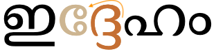
A prebase vowel, pronounced after a consonant cluster, but rendered to the left of the conjunct.show composition
ഇദ്ദേഹം
However, if the cluster is split by a visible virama, the pre-base vowel sign appears after the consonant with the virama. If you view the composition of the example below, you'll see that the characters and code point orders are the same as for the previous example (apart from the addition of the ZWNJ to force the virama to appear), but the location of the pre-base vowel sign is now immediately before the consonant after which it is pronounced.
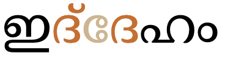
The same word, but without the conjunct. The vowel is now rendered to the left of the last consonant in the cluster.show composition
ഇദ്ദേഹം
Circumgraphs
കൊ
koU+0D15 MALAYALAM LETTER KA + U+0D4A MALAYALAM VOWEL SIGN O
ൊ␣ോ␣ ␣ൌ
Three vowels are produced by a single combining character with visually separate parts, that appear on opposite sides of the consonant onset, eg.
ഒരൊറ്റ
ആഗോള
As for pre-base vowel signs, these do not split a conjunct, but instead they treat the conjunct as a single unit and place glyphs either side of it, eg.
ക്രോധം
ക്രോ␣ക␣്␣ര␣ോ
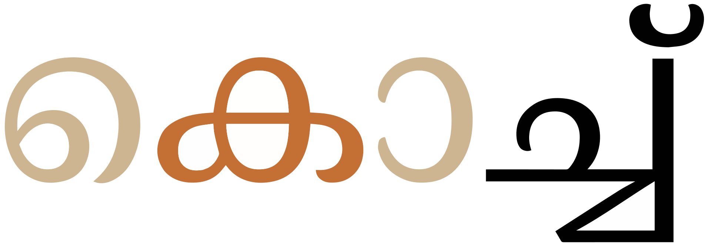
A circumgraph vowel: a single code point with glyphs on both sides of the consonant after which it is pronounced.show composition
കൊച്ച്
In modern text, 0D57 has become a dominant way to write the vowel au̯, rather than 0D4C, eg.
സൗന്ദര്യം
All of these circumgraphs can be written as a single character, or as two. Whichever approach is used, the vowel signs must be typed and stored after the consonant characters they surround, and if the vowel signs are decomposed, they must be typed and stored in left to right order. See encoding_circumgraphs.
Vowel length
Vowel length is indicated by the vowel sign used (see combiningV).
Standalone vowels
Malayalam represents standalone vowels using a set of independent vowel letters.
ഇ␣ഈ␣ഉ␣ഊ␣എ␣ഏ␣ഒ␣ഓ␣അ␣ആ␣ ␣ഐ␣ഔ
For example:
എല്ലാ
ഓടുക
സിമേഈ
The set includes a character to represent the inherent vowel sound (അ ).
The Unicode block also contains ൟ, which is an archaic form for iː.u16,#G697705
Vowel sounds to characters
This section maps Malayalam vowel sounds to common graphemes in the Malayalam orthography.
Code points are labelled as either dependent or standalone.
Sounds listed as 'infrequent' are allophones, or sounds used for foreign words, etc. Light coloured characters occur infrequently.
Plain vowels
i
dependentി
standaloneഇ
iː
dependentീ
standaloneഈ
u
dependentു
standaloneഉ
uː
dependentൂ
standaloneഊ
e
dependentെ
standaloneഎ
eː
dependentേ
standaloneഏ
o
dependentൊ
standaloneഒ
oː
dependentോ
standaloneഓ
ə~ɨ̆
dependent0D4Dat the end of a word.
dependentു്at the end of a word in older texts.
standaloneഎ്
a
inherent voweleg. കടുവ
standaloneഅ
aː
dependentാ
standaloneആ
Diphthongs and other combinations
ai̯
dependentൈ
standaloneഐ
au̯
dependentൗ
standaloneഔ
Vocalics
The modern orthography generally only uses the following.u16,#G697705
ൃ␣ഋ
Examples:
മൃഗം
ഋഷി
The items in the list below are rare and typically used only to write Sanskrit in Malayalam.u16,#G697705
ൄ␣ൠ␣ൢ␣ഌ␣ൣ␣ൡ
Consonants
Consonant summary table
The following table summarises the main consonant to character assigments.
The conjunct ക്ഷkʂ is conventionally regarded as an additional letter in the Malayalam alphabet.d,420
റ has some complicated mappings to sounds. See rra_conjuncts.
Other consonants
Two other letters, ഩ and ഺ are historic and used rarely in scholarly texts to represent alveolar sounds. In ordinary texts, ന and റ are used instead.ws
Onsets
Clusters of consonant letters at the beginning of an orthographic syllable occur in Malayalam, and are typically handled as described in the section clusters. Examples:
വ്യക്തി
സ്വാഗതം
A medial RA is rendered to the left of an initial consonant or conjunct (see noninitial_ra).
ഗ്രാമ്പൂ
In some cases, a medial consonant is represented using a vocalic vowel sign, rather than a consonant, eg.
കൢപ്തം
Medial RA
ര when non-initial in a cluster is displayed to the left of the other consonant(s) in the reformed orthography. This transposition is done during the font rendering – the typed and stored order remains the same as the spoken order.
ചക്രം
ക്ര␣ക␣്␣ര
When RA follows more than one consonant, it is displayed to the left of any conjunct, not just to the left of the preceding consonant, eg.
ചന്ദ്രക്കല
ന്ദ്ര␣ന␣്␣ദ␣്␣ര
Finals
Malayalam words can end with a consonant sound or an inherent vowel, and the difference is usually marked. However, unlike many other Brahmi-derived scripts, the virama (chandrakkala) is not normally used to kill the inherent vowel at the end of a word. This is because, in Malayalam, the chandrakkala actually can indicate a short vowel sound (see halfu). Instead, Malayalam uses a set of special characters, called chillus, that don't have a following vowel, or a final-consonant diacritic.
The chillu characters can also appear as word-medial syllable codas, but often these codas are written using either a chandrakkala or a conjunct (see clusters).
Codas can also be written using a couple of diacritics, described below.
Chillus
Contemporary chillu (or cillakṣaram) characters include the following.
ൿ␣ൻ␣ൺ␣ർ␣ൽ␣ൾ
ൿ is relatively rare in modern texts.u16,#G701512
Examples:
വില്ലൻ
അയാൾ
അവർ
Although they represent 'dead' consonants, chillu forms can sometimes be followed by a virama and subjoined consonant, although this is only likely to occur in modern texts in the combination ൻ്റ (see rra_conjuncts).
The Unicode Standard lists a small number of other, historical combinations of a chillu consonant as part of a stack.
Unicode v9 introduced 3 more chillu letters, ൔ, ൕ, and ൖ, which are only found in historical texts.u16,#G701512
ൔ␣ൕ␣ൖ
In older Unicode text chillus were written by following the consonant with 0d4d 200d, but since the introduction of the chillu characters in Unicode v5.1 the use of the atomic characters is recommended, instead.u16,#G705612
RA coda
Malayalam has 3 ways of writing an r coda before a following consonant.u16,#G708363
Chillu RA Since the orthographic reform, this has been written as ർ followed by the next consonant in the cluster, eg.
നേർത്ത
ഈർപ്പമുള്ള
Special form The form ര്യ is only used before യu16,#G708363, eg.
സൗന്ദര്യം
ഭാര്യ
Dot reph Before the 1970s, a dot or small vertical stroke was used over the following consonant, in a similar way to the repha in other Indic scripts. It may still be in use by people educated before that time. The character 0D4E is used to reproduce this, eg. compare:
തൎക്കം
തർക്കം
The reph dot is not a combining character; it has the general category of letter. It is typed and stored in the same place as you would expect to find the RA + VIRAMA, ie. before the consonant it appears over, and then the font needs to position the glyph over the consonant that follows it.
Anusvara & visarga
ം␣ഃ
Malayalam also uses the anusvara and visarga as syllable-final characters, eg. the following word contains both:
ദുഃഖം
The anusvara normally represents the sound m, but may be assimilated to another nasal consonant. It can be used multiple times after a vowel,u16,#G706689 eg.
ഈംംംംị̄m̽m̽m̽m̽
Consonant clusters
The absence of a vowel sound between two or more consonants is visually indicated in one of the following ways.
Special RA forms : The letter RA has its own idiosyncratic ways of combining with other consonants, whether it precedes or follows them. See initial_ra, noninitial_ra, and rra_conjuncts.
In Unicode, the stacking and conjoining behaviour is achieved by adding 0D4D between the consonants. The font hides the glyph automatically.
Traditional fonts have more ligatures than modern ones. There doesn't appear to be much in the way of a systematic approach to shaping. With a few exceptions, the conjuncts are specific to particular pairs of characters.
The link at the beginning of this section shows all combinations of two consonants and allows you to observe the effect of changing the font. Versions of the table with conjuncts highlighted are available for Noto Serif Malayalam and Thoolika Traditional Unicode (part 1),
(part 2). The split for the Thoolika font is stacked, etc in part 1, and using chillu shapes in part 2. The number of conjuncts is 135 and 219+156, respectively.
Sequences involving more than two consonants in a cluster can combine a variety of methods. The example in to_india shows 3 conjoined consonants in the middle, and a conjoined cluster stacked below another letter at the end.
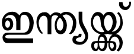
The word ഇന്ത്യയ്ക്ക്ịn͓t͓yy͓k͓k͓to India in a traditional font.show composition
ഇന്ത്യയ്ക്ക്
Malayalam has 2 other virama code points, both of which are only found in historical texts, and used to indicate a pure consonant in a particular orthography. They are ഻ and ഼.u16,#G697705
Visible chandrakkala
This was promoted as the default by the orthographic reforms of the 1970s. It is also the fallback if the font doesn't contain conjunct forms for a particular cluster of consonants.
Examples include
ആഴ്ചഗുല്ഫംനമസ്തേ
Stacking
The non-initial consonant is drawn below the initial consonant, and with a slightly different shape.
The following list shows stacked conjuncts in the Noto Serif Malayalam font (unless you changed the font for examples on this page).
Stacks tend to be particularly common for geminated consonants, even when those consonants don't participate in other conjunct pairings. In 3 such cases, the second consonant is often represented by a small triangle.
Otherwise, the subjoined consonant may be a reduced version of the original, or may be ligated. Note that LA has a very different shape from normal when in subjoined position.
Conjoined consonants
Conjuncts where the consonants remain side-by-side typically merge the shapes of the consonants.
The following list shows conjoined conjuncts in the Noto Serif Malayalam font (unless you changed the font for examples on this page). To see the original shapes, click on the conjunct.
Three consonants have very standardised glyphs when they appear in non-initial position, and those glyphs don't merge with the other consonant. They are യ, റ, and വ. The list below shows them combined with the letter KA.
ക്യ␣ക്ര␣ക്വ
Exceptions to the above are യ്യy͓yവ്വʋ͓ʋ
The isolated, pre-base shape for RA was introduced by the reformed orthography. In the old orthography RA as the second element in a conjunct was represented by a ligated swash below the initial consonant.
Examples of consonant+RA ligatures in the old orthography.
Chillu-style initials
In some fonts the initial consonant in a cluster may take a chillu shape, followed by an ordinary glyph for the second character.
In the Thoolika Traditional Unicode font this applies to the following consonants in initial position.
ക␣ണ␣ന␣ര␣ല␣ള
conjunct_chillus shows the same sequence of characters in the Thoolika Traditional Unicode font. Note how the shape of the second consonant remains the same as normal - there is no ligation or repositioning. The examples in conjunct_chillus all use SHA in the second position. Note that the chillu code points are not used here – this is just font styling on normal consonants.
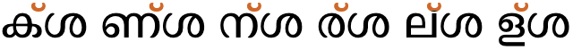
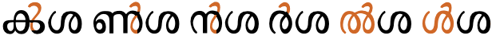
Chillu-style initials used in a modern font (top) and traditional font (bottom) for consonant clusters.
Clusters with RA
When RA occurs in a cluster, either as a medial consonant or a coda followed by another consonant, there are special rules for rendering. See noninitial_ra and initial_ra for details.
Clusters with RRA
The conjunct റ്റ is always pronounced tt, eg.
പാറ്റ
ഉറ്റോർ
റ്റോ␣റ␣്␣റ␣ോ
Until the 1960s, the geminated tt was generally written using just two side-by-side RRA letters, although circumgraphs and pre-base vowel signs would span the digraph as if it were a single unit. For example:
പാററ
This is problematic in 2 ways:
because there is no virama creating a single typographic unit of the digraph, the decomposed form of circumgraphs has to be used, with parts of the vowel sign after each RRA letter, eg.
മാറെറാലി
റെറാ␣റ␣െ␣റ␣ാ
the digraph sometimes represents two separate consonants followed by vowel sounds, making the sequence ambiguous, eg.
ടെംപററി
ററി␣റ␣റ␣ി
It would be particularly ambiguous when there are more than 2 RRA characters side by side. For example, compare
ബാറ്ററി
ബാറററി
Use in /nta/. When stacked, ൻ്റ is always pronounced nta, eg.
ആൻ്റോ
According to the Unicode Standard, an alternative spelling exists without the stack, but this can also lead to ambiguityu,506, ie. ആൻേറാận̽ēṙāaːntoː
Note that again we had to split the vowel to achieve this spelling.
Consonant length
Gemination/consonant lengthening is very common in Malayalam. It is usually indicated by doubling the consonant, in the same way as for consonant clusters (see clusters).
അപ്പൻ
തൂക്ക്
The sound tta is unusual in that it can be written റ്റ, although that is sometimes ambiguous (see rra_conjuncts).
പാറ്റ
മാറ്റം
Consonant sounds to characters
This section maps Malayalam consonant sounds to common graphemes in the Malayalam orthography.
The left column contains ordinary consonants, and the right column contains dedicated syllable-final consonants.
p
consonantപ
pʰ
consonantഫ
b
consonantബ
bʰ
consonantഭ
t̪
consonantത
tt
consonant clusterറ്റ
t̪ʰ
consonantഥ
t͡ʃ
consonantച
t͡ʃʰ
consonantഛ
d̪
consonantദ
d̪ʰ
consonantധ
d͡ʒ/ɟ
consonantജ
d͡ʒʰ/ɟʰ
consonantഝ
ʈ
consonantട
ʈʰ
consonantഠ
ɖ
consonantഡ
ɖʰ
consonantഢ
k
consonantക
chillu consonantൿCoda. (Chillu consonant)
kʰ
consonantഖ
ɡ
consonantഗ
ɡʰ
consonantഘ
s
consonantസ
ʂ
consonantഷ
ʃ~ɕ
consonantശ
ɦ
consonantഹ
final consonantഃCoda.
m
consonantമ
final consonantംCoda.
n
consonantന
chillu consonantൻCoda. (Chillu consonant)
ɲ
consonantഞ
ɳ
consonantണ
chillu consonantൺCoda. (Chillu consonant)
ŋ
consonantങ
ʋ
consonantവ
r̪
consonantര
r
consonantറ
chillu consonantർCoda. (Chillu consonant)
rɨ
vocalic vowel signൃ
vocalic independent vowelഋ
rɨː
vocalic independent vowelൄVery rare. Used for Sanskrit words.
vocalic independent vowelൠVery rare. Used for Sanskrit words.
ɻ
consonantഴ
l
consonantല
chillu consonantൽCoda. (Chillu consonant)
ɭ
consonantള
chillu consonantൾCoda. (Chillu consonant)
lɨ
vocalic independent vowelഌUsed in one Sanskrit word only.
lɨː
vocalic independent vowelൡVery rare.
j
consonantയ
Encoding choices
This section looks at alternative strategies for typing and storing text in Malayalam, taking into consideration the effects of normalising the text using Unicode Normalisation Form D (NFD), and Normalisation Form C (NFC).
Encoding circumgraphs
The 3 circumgraphs can be written as a single character, or as two characters (in decomposed text).
The single code point per vowel sign is the form preferred by the Unicode Standard and the form in common use for Malayalam. The parts are separated, however, in Unicode Normalisation Form D (NFD), and recomposed in Unicode Normalisation Form C (NFC), so both approaches are canonically equivalent.
Whichever approach is used, the vowel signs must be typed and stored after the consonant characters they surround. In the case of decomposed vowel signs, the order is also important and must be as shown above.
Precomposed
Decomposed
0D4A
0D46 0D3E
0D4B
0D47 0D3E
0D4C
0D46 0D57
Inappropriate glyph combinations
In some cases, visually similar or identical glyph patterns can be made from a sequence of code points rather than the single code point that Unicode provides. These are not made the same by normalisation, and they are not semantically equivalent. These inappropriate sequences should be avoided because they will cause the meaning of the text to change; searches, matching and other aspects of the text will fail to be understood by the application or the font. In the table below, the single code point on the left should be used, and not the sequence on the right. In some cases, fonts will indicate that there is a problem by forcing the appearance of a dotted circle or otherwise failing to render the text correctly, but this may not always be the case.
Use
Do not use
0D48
0D46 0D46
ഈ
0D07 0D57
ഊ
0D09 0D57
ഓ
0D12 0D3E
ഐ
0D0E 0D46
ഔ
0D12 0D57
Chillus
In older Unicode text chillu letters were written using the combination C+VIRAMA+ZWJ, but since the introduction of the chillu characters in Unicode v5.1 these new atomic characters are recommended. The sequences are not canonically equivalent.
The default Noto font used for this page doesn't render the K glyph sequence in this table the same as the atomic character, but older fonts such as Malayalam MN and ThoolikaTraditionalUnicode do.
Atomic (recommended)
Decomposed (do not use)
ൿ
0D15 0D4D 200D
ൺ
0D23 0D4D 200D
ൻ
0D28 0D4D 200D
ർ
0D30 0D4D 200D
ൽ
0D32 0D4D 200D
ൾ
0D33 0D4D 200D
Codepoint order
When 2 vowel signs are used for a circumgraph, the encoded order of the combining marks should match the displayed order, left to right.
Numbers, dates, currency, etc
Digits
There is a set of Malayalam digits, but they are not in use for modern texts.
൦␣൧␣൨␣൩␣൪␣൫␣൬␣൭␣൮␣൯
Older texts also used the following additional numeric characters.
൰␣൱␣൲␣൳␣൴␣൵␣൘␣൙␣൚␣൛␣൜␣൝␣൞␣൶␣൷␣൸
൏ was used historically to measure rice.
According to the Unicode Standard, Malayalam also used the following characters in the Common Indic Number Forms block.u16,#G697504
꠰␣꠱␣꠲
Ordinals
ം may be attached to digits to indicate ordinal numbersu16,#G706689, eg.
355ാം
Dates
൹
൹ can be used like the 'th' in English dates, but it use is fading in modern text. u16,#G697526
Text direction
Malayalam text runs left to right in horizontal lines.
Malayalam is not cursive, but display technology needs to provide shaping for conjunct formation.
Display technology must correctly position pre-base vowels to the left of the consonant or consonant cluster, and place the separate glyphs of 2-part vowels around those also (see prebase and circumgraphs).
Like Tamil, in the traditional version of the script Malayalam consonants combining with 0D41 and 0D42 tend to produce ligated forms.
During orthographic reforms in the 1970s and 1980s a simpler approached was introduced, to make printing easier. Both vowels were represented by an unchanging, post-base vowel sign as shown below. No change is needed to the underlying code points in Unicode, this is purely a font difference.
The list below shows traditional forms for each of the basic consonants with ു. The top line shows the traditional form, and the line just below (in the darker colour) shows the modern version.
fig_zwnj summarises the various ways in which a consonant cluster can be rendered (on the right), and on the left indicates which code sequences may produce those forms.
ക␣്␣ര␣␣ക്ര
ക␣്␣␣ര␣ക്ര
ക␣␣്␣ര␣ക്ര
Uses of ZWNJ (zero-width non-joiner) in Malayalam where, by default, the font produces a ligature for the sequence pronounced krɐ.
Assuming that you have fonts that produce the expected behaviours, the Unicode Standard describes the use of the joiner characters 200C (ZWNJ) and 200D (ZWJ) as follows:
ZWNJ placed after the chandrakkala can be used to force the production of a visible virama, rather than a conjunct form.u16,#G706075 For example, compare:
ക്ക
ക്ക
Uniquely to Malayalam, placing the ZWNJ before the chandrakkala is supposed to produce the modern 'open' form of the conjunct in fonts that would otherwise produce a traditional conjunct.u16,#G706085 For example, compare:
ക്ക
ക്ര
ZWJ before the chandrakkala can be used to produce a traditional conjunct form in fonts that produce the open form by default but have the glyphs for the traditional forms too.u16,#G706080
ZWJ used after the chandrakkala may produce a chillu form (eg. ക്), but this approach is now deprecated in favour of using the chillu codepoints, such as ൿ. See finals.
Typographic units
Word boundaries
Spaces are often used between words, but it is not uncommon for writers to use spacing to indicate phonological pauses, rather than lexical boundaries.ws
Sequences of characters between spaces are often quite long in Malayalam, eg. അറിയപ്പെടുന്നുവെങ്കിലുംạ̄ṙiyp͓peʈun͓nuʋeŋ͓kilum̽
Graphemes
In many cases, grapheme clusters can be used to segment Malayalam words, since the virama is often visible and in principle allows for a segment break immediately (like Tamil). However, consonant cluster sequences often form conjuncts which should not be broken during edit operations such as letter-spacing, first-letter highlighting, and in-word line breaking. For the operations mentioned, one needs to segment the text using orthographic syllables.
The choice of visible virama vs. conjunct tends to vary from sequence to sequence and from font to font, but given that there is only one Malayalam virama, the application needs to interpret the virama in two different ways for segmentation: (1) as a simple vowel-killer, and (2) as a conjunct initiator. Choosing the right behaviour requires the application to understand the rendered glyphs, but this is asking a lot of an application.
The Malayalam virama (chandrakkala) is 0D4D,
which has an Indic Syllabic Category of Virama.
Grapheme clusters
Base ZW(N)J? Combining_mark*ZW(N)J?
Combining marks may include one of the following types of character.
Dependent vowels [13] (see combiningvowels) There is usually only one vowel sign per base consonant, however in decomposed text circumgraphs are represented by 2 combining characters. Vowel signs may also be attached to numbers (see vowelsigns).
Final consonants [2] (see finals) One of 2 possible combining marks, at the end of a grapheme cluster sequence. May also occur after independent vowels.
Virama (chandrakkala) [1] (see anusvara_visarga and absence) The chandrakkala is used between consonants in a cluster, however sometimes it is simply rendered as a diacritic over the non-final consonant(s) in a cluster, but other times it causes conjunct creation and is invisible (see orthographicS). It is also used (usually at the end of a word) to indicate the half-u vowel sound. In older texts this would follow the U vowel sign. Finally, it may also be used to modify a vowel sound, such as in the 3rd example below.
Placing a ZWNJ before the chandrakkala is supposed to produce the modern 'open' form of the conjunct in fonts that would otherwise produce a traditional conjunct (see joiner). A ZWNJ can also be used after a chandrakkala to prevent the formation of a conjunct form.
ZWJ can be used before the chandrakkala to produce a traditional conjunct form in fonts that produce the open form by default but have the glyphs for the traditional forms too (see joiner).
The following examples show a variety of grapheme clusters, several of which show the virama used in a different way from its use in other words:
Click on the text version of these words to see more detail about the composition.
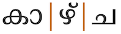
കാഴ്ച
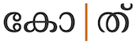
കോത്
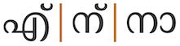
എ്ന്നാ
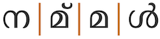
നമ്മൾ
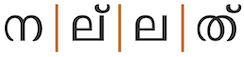
നല്ലത്
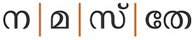
നമസ്തേ
In many cases a non-final consonant in a cluster is these days rendered using a special chillu codepoint, rather than a consonant with virama. Chillus are also used for word final consonants that are not followed by a vowel. These chillu characters stand alone as grapheme clusters. See the example below, where the 2nd and final graphemes are chillus.
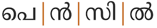
പെൻസിൽ
Larger typographic units
(Consonant Chandrakkala)* Grapheme_cluster
Malayalam commonly stacks or conjoins glyphs, to form conjuncts. The conjuncts represent consonant clusters.
Grapheme clusters terminate after a sequence of marks that ends with a chandrakkala, but editorial operations that change the visual appearance of the text, such as letter-spacing, first-letter highlighting, line-breaking, and justification, should never split conjunct forms apart. For this reason, an alternative way of segmenting graphemes is needed. This may not apply, however, for some other operations such as cursor movement or backwards delete.
Where conjuncts appear, a typographic unit contains multiple grapheme clusters. The non-final grapheme clusters all end with 0D4D, and the final grapheme cluster begins with a consonant.
The following are examples.
Click on the text version of these words to see more detail about the composition.
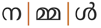
നമ്മൾ
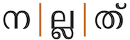
നല്ലത്
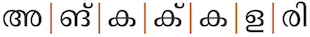
അങ്കക്കളരി
Complicating factors
Malayalam has only one virama code point, but it can be used to indicate a conjunct and disappear, or it may simply be displayed as a diacritic over the non-final consonant(s) in a cluster. Often both approaches will appear in the same cluster. The codepoints in memory give no indication as to which will result – that may also vary by font. There is no additional code point, like in some Southeast Asian scripts, that users can choose to indicate that they want a visible chandrakkala rather than a conjunct.
The problem is that, in principle, you would expect line-breaks, etc. to be allowed after a consonant with a visible chandrakkala, just like in Tamil. But without a way to distinguish how the font is rendering the codepoints, this is not possible. Therefore, applications may keep cluster components together for Malayalam when the chandrakkala is visible.
The following example shows 3 chandrakkala characters that are used in different ways. The first just appears above its base, the second creates a conjunct and disappears, and the third represents a vowel sound (a completely different usage). Note that the app that generated the orthographic syllable keeps everything together as one unbreakable typographic unit.
Click on the text version of this word to see more detail about the composition.
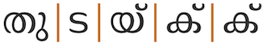
തുടയ്ക്ക്
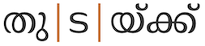
Same word with orthographic syllable rules applied.
Treatment as grapheme clusters rather than conjuncts can also affect vowel sign positioning. An illustration of this can be seen when a consonant cluster is followed (phonetically) by a vowel rendered as a vowel sign glyph that is displayed to the left of the base. For example, observe below how the pre-base vowel 0D47 appears to the left of the tr conjunct, but doesn't get rendered at the beginning of the str cluster.
Click on the text version of this word to see more detail about the composition.
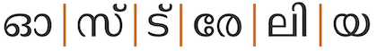
ഓസ്ട്രേലിയ
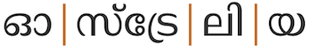
Same word with orthographic syllable rules applied.
Punctuation & inline features
Phrase & section boundaries
!␣,␣:␣;␣.␣।␣॥␣?
Malayalam uses western punctuation.
phrase
,
;
:
।
sentence
.
?
!
॥
। and ॥ are used in older texts to separate phrases.u16,#G697493
Bracketed text
(␣)
Malayalam commonly uses ASCII parentheses to insert parenthetical information into text.
start
end
standard
(
)
Quotations & citations
‘␣’␣“␣”
Malayalam texts use quotation marks around quotations. Of course, due to keyboard design, quotations may also be surrounded by ASCII double and single quote marks.
start
end
initial
“
”
Line & paragraph layout
Line breaking & hyphenation
Spaces provide the main line break opportunities, however Malayalam is an agglutinative language and Malayalam words can be long. This can lead to large gaps during justification, and sometimes words that are longer than the available column width, so it is desirable to also hyphenate words.
Line-edge rules
As in almost all writing systems, certain punctuation characters should not appear at the end or the start of a line. The Unicode line-break properties help applications decide whether a character should appear at the start or end of a line.
The following list gives examples of typical behaviours for some of the characters used in modern Malayalam. Context may affect the behaviour of some of these and other characters.
Click/tap on the Malayalam characters to show what they are.
“ ‘ ( should not be the last character on a line.
” ’ ) . , ; ! ? । ॥ % should not begin a new line.
൹ should be kept with any number, even if separated by a space or parenthesis.
In-word line-breaks
Because of the length of Malayalam words, in-word line-breaks are very common and needed during layout, especially in narrow columns, such as newsprint.
The breaks mostly takes place at syllable boundaries, however there are also occasional exceptions and special cases. Usually, no visual marker is associated with the mid-word line break.st
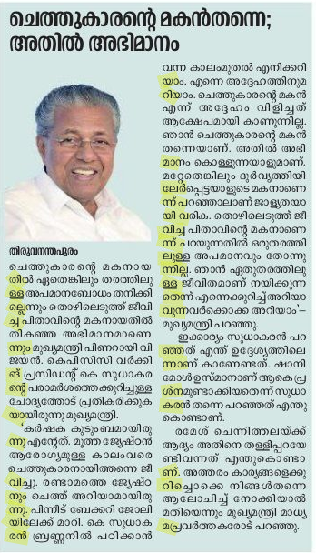
Text from the Malayalam newpaper, Deshabhimani, showing hyphenated words with yellow highlighting.
Baselines, line height, etc.
Malayalam uses the so-called 'alphabetic' baseline, which is the same as for Latin and many other scripts.
Malayalam characters have ascenders and descenders, and combining marks appear above and below the lettters. However, generally speaking the extensions involved don't extend far beyond those of Latin text.
To give an approximate idea, fig_baselines compares Latin and Malayalam glyphs from Noto fonts. The basic height of Malayalam letters is typically around the Latin x-height, however extenders and combining marks reach slightly beyond the Latin ascenders and descenders, creating a need for slightly larger line spacing.
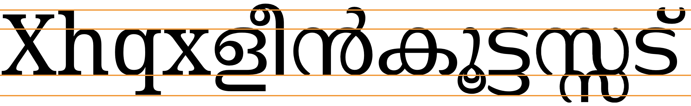
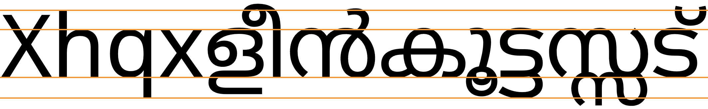
Font metrics for Latin text compared with Malayalam glyphs in the Noto Serif Malayalam (top) and Noto Sans Malayalam (bottom) fonts.
fig_baselines_other shows similar comparisons for the Malayalam MN and Kartika fonts.
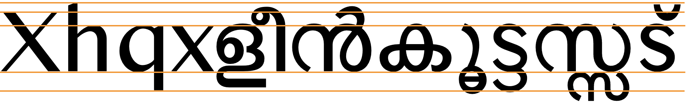
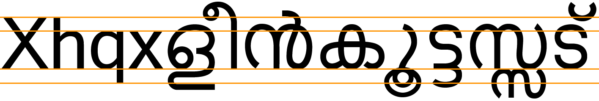
Latin font metrics compared with Malayalam glyphs in the Malayalam MN (top) and Kartika (bottom) fonts.
Counters, lists, etc.
You can experiment with counter styles using the Counter styles converter. Patterns for using these styles in CSS can be found in Ready-made Counter Styles, and we use the names of those patterns here to refer to the various styles.
The modern Malayalam orthography uses a native numeric style.
Numeric
The malayalam numeric style is decimal-based and uses these digits.rmcs
൧␣൨␣൩␣൪␣൫␣൬␣൭␣൮␣൯␣൦
Examples:
൧␣൨␣൩␣൪␣൧൧␣൨൨␣൩൩␣൪൪␣൧൧൧␣൨൨൨␣൩൩൩␣൪൪൪
Prefixes and suffixes
Malayalam commonly uses a full stop + space as a suffix.
Examples:
൧. ൨. ൩. ൪. ൬.
Separator for Malayalam list counters: full stop + space.